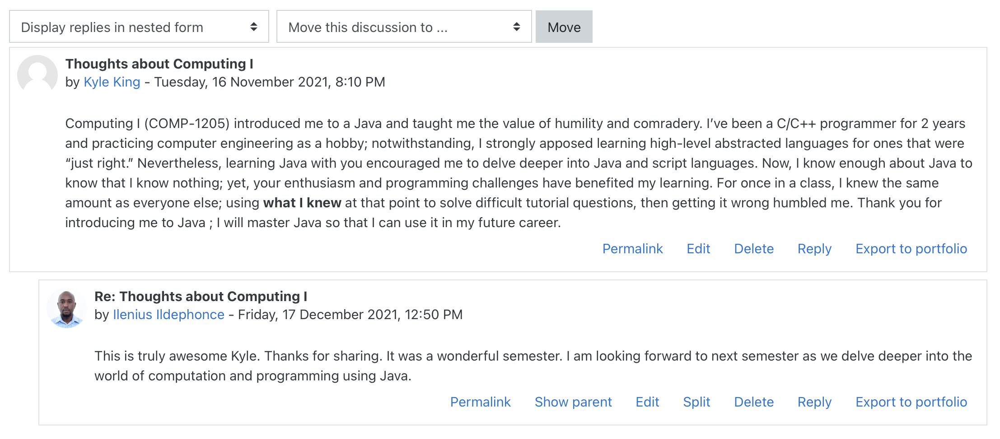
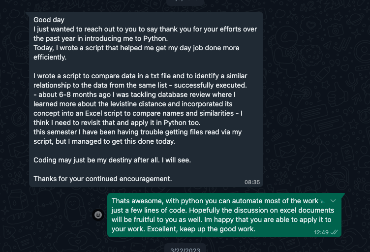

Dr. Ilenius Ildephonce
🚀 Welcome to my Portfolio!

"The teacher who is indeed wise does not bid you to enter the house of his wisdom but rather leads you to the threshold of your mind."
- Kahlil Gibran
👨✈️ Biography
I am deeply inspired by this quote from Kahlil Gibran, which states that a truly wise teacher does not force their knowledge upon their students, but rather guides them towards unlocking their own potential. As a teacher, my goal is to empower my students and help them reach their fullest potential.
Although I am relatively new to teaching in higher education, having started three years ago, I have had the privilege of learning from experienced mentors during my graduate studies. This has allowed me to develop a teaching style that is rooted in the principles of fostering independent thinking and self-discovery.
Originally from a small village in the North-west of Tanzania, I currently work as a lecturer in the School of Science, Computing, and Artificial Intelligence at The UWI, Five Islands Campus in Antigua and Barbuda. For more information on my qualifications, projects and research interests, please refer to CV provided on this website.
"No one is an artist unless he carries his picture in his head before painting it, and is sure of his method and composition"
-Claude Monet
📜 Manifesto-Teaching Philosophy
I believe that teaching in higher education is about coaching and facilitating knowledge acqusition. This is through carefully directing the flow of knowledge and providing the necesary and personalized support to learners. Teachers should ensure that learning is not blocked and should encourage self-realization and personalized learning. The teacher should not obstruct or hinder learning either intentionally or not. Teachers should therefore understand their idiosyncrasies which may inhibit learning and be wary of them as facilitate knowledge transferance.
Learning occurs when students takes control of what is being learned, toy with it and are able to push its boundaries using imagination or creativity testing the knowledge they acquired. Learners should therefore be encouraged and systematically guided to contextualize their understanding of learned concepts. I believe there are no boring subjects. Therefore, learning any subject, if given the rigour and cultivated interest, the meaning in what is learned is visualized and true learning occurs.
👨🏫 Welcome to My Class: Here Why I do what I do
To effectively facilitate learning a teacher should learn the current social and environmental context and constraints of the learners. For example, If you are teaching a class that is obsessed with anime, learn a few things about anime that can be used in class to contextualize the subject. Importantly research shows that digital learners/NetGen’er’s have several characteristics that influence their interests in what is being learned. Oblinger 2004 theorizes that the current generation of college students (ages 18-22) are experiential learners who prefer to learn by doing, instead of learning by listening. NetGen’ers are community-oriented; to them, friends, relationships and contributions to the community are essential. NetGen’ers’ learning preferences lean towards teamwork, experiential activities and the use of technology. Their strengths include multitasking, goal orientation, a positive attitude and a collaborative style.
👨🏫 Welcome to My Class: Here is what I do
With the rapid advancement in technology including AI these new learners are focused on nurturing skills necessary to have a meaningful and fulfilling career in this modern-high tech society. These learners, therefore, need to be engaged in a way that fosters creativity, and innovation using technology. As such, a modern lecturer should creatively contextualize the subject. For example, in my practice, I found several techniques useful in delivering and assessing the learners. Examples include in-class group activities, peer assessment, games and game design and competitive challenges. The technologies used must be relevant and intuitive. Students engage more with activities using the latest technologies, online live dashboards and polls to facilitate engagements. Platforms such as hackerrank are useful tools for my programming and problem-based courses. Importantly, assessment and content which help develop the student personally are engaging and meaningful to the students. For example, helping students develop their online portfolios as part of a web-development course has resulted in meaningful learning.
The battle of getting better is never ending
Antonio Brown
👩🏽🚀 Adjustments to Teaching and Learning
As a new lecturer I had preconceptions that good lectures are the ones who digest and present high quality content. I was determined to leave the students impressed by the rigor, the content quality and clarity. However, I learned that leaving them impressed is about me and not about the students. I therefore learned that teaching is more an art than it is a science. It requires a creative deployment of the relevant didactic theories behind deeper learning. The insturctor is learning and re-learning constantly and apply innovative mechanisms to influence knowledge acquisition.
The best way out is always through
-Robert Frost
♟️ Learning theories and strategies I find useful
Experiential Learning
I use games and gamification platforms
Constructionism
💭 Reflection on one of my class
In this lecture, the student were engaged and fully participated in the learning. However the modality of engagement was primarily through questioning. Systematic designed practical engagements to allow the students to demonstrate what they know was lacking. Also, I observed that students could be easily distracted with their phones/tablets and laptops. In this class I found myself have to be constantly observant and intervene once a student seem distracted. This impacted the time spent on a particular sub topics, the questioning resulted in having to repeat a particular concept several times. Additionally, once more than 3 students seem less engaged, i found myself have to enginuosly reconnect the class. I found myself being reactive to reset the mood and introduce other fun conversation again by inquiring about something to regain their attention and focus. For example during the lecture, I had to stress on the use of double datatype (decimal) to represent pay and not an integer highlighting the cents portion of the pay which stimulated an interesting discussion. This then led to laughter and the class was united and ready to focus on the key concepts presented. Having the content engaging and being connected with the technologies brought to class could minimize the time spent on repeating concepts to students who were distracted and calling out names to ensure everyone is following. Similarly, this method works for now with smaller classes, it could not work for larger classes.
🧮 Lessons learned going forward
The solution could be to restructure the content using the social contructionism theory. This can impact the engagement aspect. Mechanisms to allow active engagement with the material through competitive and collaborative challenges. Importantly these challenges should be technology enabled since in this class each student had one or more device they could use. The connectivity could be further enabled to allow students and lecturer to actively engenge in content and promote deep learning. Thereofore, in future lectures I will research on free and open source tools to connect what is being presented to the students and allow them to actively interact with the content. Use group activities with competitive elements where individual groups compete against each other. Use technology to display live dashboards. The theory by Vygotsky on zone of proximal development could be achieved through the use of tools which foster creativity, conectivity and collaboration.
⚖️ Assessment and feedback
In the courses I teach, the coursework and any other formative and summative assessment are focused on providing a balanced picture of the student’s strengths and weaknesses. In my practice, Multi-modal feedback and assessment mechanisms are employed depending on the content type, purpose and learning outcomes. In this course in particular where design choices are dependent on the constraints within the project’s domain, the feedback employed will be based on Roger’s feedback model, specifically the supportive (student gets a score and guidance information), probing (student gets a score and analysis of why their solution is wrong). In some cases, you will be asked questions to consider different perspectives to help formulate well-rounded and grounded answers to the problems. Moreover, feed-up mechanisms will be adopted. We encourage you to read the feedback given and try out the ideas suggested. For each assessment component, a marking scheme will be provided to guide your preparations, also the score sheet and individual feedback for each assessment item will be uploaded alongside the total grades for your review.
Overcoming Bias in Assessments
This class is small in size, therefore, I will get to know everyone very well. This will accrue many benefits but also presents challenges related to biases such as the halo effect and horn biases. For example, in the past anonymizing scripts hasn't worked because I still can accurately identify students based on the solution scripts. This leads to moral struggles when grading, and I find myself going through the scripts several times to ensure fairness. I, therefore, will succumb to the biases such as over or under-estimating the individual student's strengths and weaknesses. This can lead to imbalanced support. To mitigate these biases I will offer detailed and meaningful feedback for each of the components while avoiding score pollution (Rezai et al., 2022). Also, automating grading has been useful to eliminate my biases for programming assignments. Importantly, It ensures the development of comprehensive tests to properly test working code on a variety of test cases improving fairness and transparency. I will enhance validity, transparency and consistency in assessments and offer constructive and descriptive feedback which are related to the component being assessed.
Reflection on one of My Lecture Recordings
In this class recording, student involvement was not systematic and the use of technology was minimal. I would call out names or ask questions to the class for them to be involved, this works for small classes but still it is time-consuming. Designing the course in such a way that interaction is deliberate help to keep the class focused and also fully engages all students. For example in the recording, I was asking students if they understood and I realized that I made a comment on the fact that one student was looking at their cellular device, if I had let’s say polls sent to their devices where the students can click, I would have capitalized and controlled what they are looking at on their own devices. I think because students are going to look at their devices anyway, it makes sense that you design lectures in such a way that they are using their technological devices to engage with the content being presented in the class. Therefore, the deliberate deployment of technological tools to enhance the class experience is desirable in my future classes. I will research and be creative in making dynamic content using technology and avoid static 2D content. In the future my lectures, will mainly be dynamic, interactive and media-rich to facilitate students to easily process the content presented. I plan to continuously research many other tools available to allow my students to use the devices they bring to class to fully participate in the learning. This CUTL Programme has illuminated many aspects of improving my teaching. The following are a few examples of the topics I found transformative.
- Reflection and peer evaluations
- Pedagogical theories in relation to course designs.
- Authentic assessments and alignment.
- Integrating media and technology into teaching.
📑 Teaching Responsibilities
- COMP0001: Preliminary Computer Science I
- COMP0002: Preliminary Computer Science I
- COMP1205: Computing I
- COMP1210: Computing II
- COMP2225: Software Engineering
- COMP2232: Object-Oriented Programming Concepts
- COMP3310: Algorithms
- COMP3320: Design Principles of Operating Systems
🦾 Feedback
Student Feedback
 Evidence from Early Informal Evaluations
Faculty & Colleagues Feedback
Link to Detailed CV
🎮 Created Artefacts (Games)
🎯 Professional Development
Statement of Continued Development
Development in technology is outpacing research efforts in computing education. Constant research on current trends in technological advancement is key to developing relevant learning activities that are meaningful in a given context and timeline. As a computer science educator, I should constantly research tools which can enhance or threaten my teaching practices. As such in both the sort term and long term I am commited to achieve the following:
- I will continuously reflect and Improve the quality of instructional materials and course delivery methods Enhancing the use of technology in teaching and learning. This will be achieved through peer-evaluation activities and maintaining an online journal.
- I will countinously engage in the design of effective leasson plans which encourage active student engagement and participation in the learning process
- In order to stay current with the developments in computing education and advances in computation pedagogy, I will join a special interest group of computing educators and also subsribe to top journals in the domain. The special interest groups to join are The ACM Special Interest Group on Computer Science Education(SIGCSE) and Special Interest Group on Information Technology Education(SIGTE). The journals to subscribe include: Journal of Computing in Higher Education (JCHE) and ACM Transactions on Computing Education (TOCE, pronounced “tose”) .The other journals related to the use of technology in education are also sought, journals such as computers & Education
Other Univeristy Faculty-Development Initiatives
- Certificate in University Teaching and Learning (CUTL)
- -To continously engage in the Univerity CUTL and CETL community through established platforms to share best practices
Certifications
Thanks for watching!